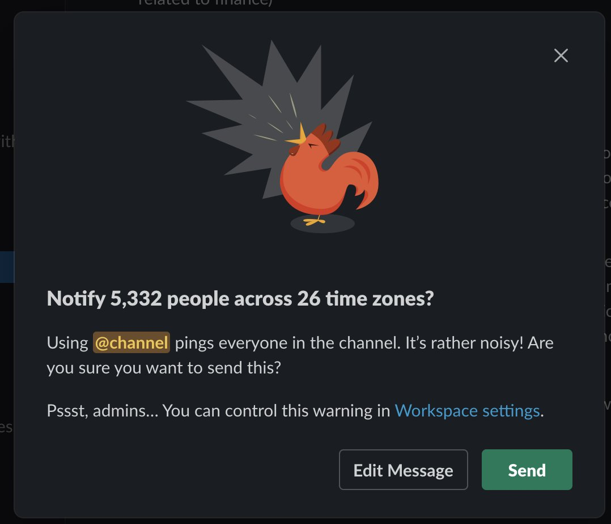
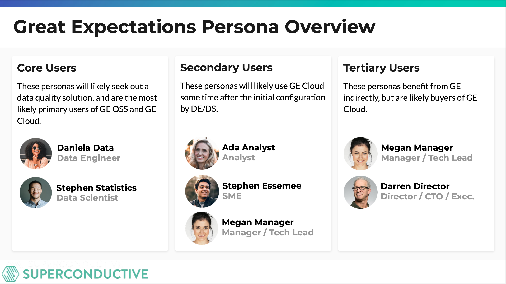

Great Expectations Cloud
Great expectations had a successful OSS product, and wanted to build a paid Cloud version. Cloud version was still in early development. Needed a UX designer to help carry it through to V1. Wanted Observability and Incident Response capabilities. Wanted to understand how concepts were landing with users, and what it would take to make a compelling V1.
Overview
- Great expectations had a successful OSS product, and wanted to build a paid Cloud version - Understood not only usability concerns but product value - Cloud version was still in early development. Needed a UX designer to help carry it through to V1 - Wanted Observability and Incident Response capabilities - Wanted to understand how concepts were landing with users, and what it would take to make a compelling V1
[Image: Great Expectations Console - first version of product]
Research & Discovery
Recruiting people by spamming Great Expectation's Slack channel
- Interviewed existing users for gaps in understanding - Understood not only usability concerns but product value - What they loved - What they didn’t love - What they were looking forward to

Early Designs
- Sprint based around ideas that the founders, GTM, and Product had - Much of the promise of GE revolved around “clauses” which were pre-generated packages of tests that users could include in their pipelines

Designs
Focused on existing user behavior with data troubleshooting. Two focus paths based on typical JTBD - Creation - IR
Viewing data and creating data tests - Typical desire is to create data tests, but not entirely sure where to start - Designed through the perspective of someone using the system for the first time [Graphic: dashboard with suggested expectations] When viewing data on the dashboard, hover states and expectations hints.
[Graphic: Personas]